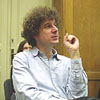
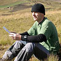
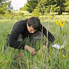
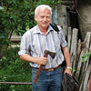
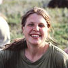
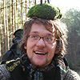

Vítejte na stránkách Oddělení geobotaniky Katedry botaniky Přírodovědecké fakulty Univerzity Karlovy v Praze.
Geobotanikou se tradičně označuje studium ekologie rostlin v geografickém a historickém kontextu. Jejím základem jsou znalosti ve dvou základních oblastech, a to (i) populační biologie a ekologie rostlin a (ii) geografie a historie vegetace.
Do prvního okruhu patří například:
- ekologie rostlinných populací, populační dynamika a ekologická genetika, ekologie invazních druhů, ekologie dálkového šíření
- interakce mezi druhy a individui, ekologie rostlinných společenstev, dynamika populací a společenstev, interakce mezi rostlinami a živočichy (včetně pastvy), nebo rostlinami a jejich parazity
- vztah rostlin ke klíčovým faktorům jejich abiotického prostředí, adaptace na extrémní prostředí
Do druhého okruhu patří například:
- klasifikace rostlinných společenstev, vztah rostlinných společenstev k ekologickým faktorům (často zkoumané mnohorozměrnou analýzou)
- vegetační fenomény vzhledem ke geomorfologii, geologii a mikroklimatu
- struktura vegetace a krajiny na větší prostorové škále, heterogenita krajiny, změny rozšíření vybraných druhů vzhledem k faktorům prostředí
- rostlinná diverzita a ekologické faktory, hierarchie biodiverzity v rámci krajiny
- historie vegetace a její vztah k dnešnímu světu
Na pražském oddělení geobotaniky se cíleně snažíme pěstovat oba směry a umožnit tak propojení mezi studiem historie a prostorového rozšíření vegetace (včetně paleoekologie) se znalostmi ekologie a populační biologie rostlin. Populační biologie či ekofysiologie rostlin nedávají mnoho smyslu, pokud nevezmeme v úvahu, kde a s kým se ony rostliny aktuálně vyskytují, případně jak a kdy se tam dostaly; podobně popis struktury, rozšíření nebo historie vegetace nedává mnoho smyslu, pokud nerozumím životu rostlin, které onu vegetaci skládají.
Geobotanika má podstatné aplikace, a to nejen (i když hodně) v ochraně přírody (užití vegetačních map a jiných vegetačních dat v ochraně přírody, krajinném plánování atp., ekologie obnovy, bioindikace, Natura 2000). V širším kontextu je základem pro chápání struktury a vývoje krajiny.
Lidé
Zaměstnanci oddělení
|  |
Tomáš Herben (vedoucí oddělení) |
mechanismy interakce mezi jedinci a druhy, matematické modelování, časoprostorová a genetická struktura společenstev klonálních rostlin, dynamika vegetace, statistická analýza | ||
|  | Petr Sklenář
(zástupce vedoucího oddělení) (petr (zavinac) natur.cuni.cz) místnost: přízemí (č. dv. 29) http://botany.natur.cuni.cz/cs/lide/sklenar-petr témata v SISu |
geobotanika a ekologie rostlin, flora a vegetace páramos Jižní a Střední Ameriky, fytogeografie vysokých And, taxonomie Caryophyllaceae a Asteraceae páramos (subalpínský st.) | ||
|  |
Zdeněk Janovský |
opylovači a jejich funkce v lučních ekosystémech | ||
 |
Tomáš Koubek (tomas.koubek (zavinac) gmail.com) místnost: 2. patro (č. dv. 86) http://botany.natur.cuni.cz/koubek témata v SISu |
populace rostlin a houbové choroby, klonální rostliny, evoluce klonality pod vlivem chorob, plasticita rostlin, klíčení lučních rostlin, mangrovy | ||
|  | Pavel Kovář (kovar (zavinac) natur.cuni.cz) místnost: 2. patro (č. dv. 87) http://botany.natur.cuni.cz/cs/lide/kovar-pavel témata v SISu |
ekologie extrémů – sukcese a kolonizace (průmyslové deponie, sopečné substráty v tropech, disturbance po povodních), interakce mravenci-rostliny-krajina, ekologie obnovy | ||
| Petr Kuneš (petr.kunes (zavinac) natur.cuni.cz) místnost: 3. mezipatro (č. dv. 106) http://petr.kunes.net/ témata v SISu |
paleoekologie a vývoj vegetace pleistocénu a holocénu, studium interglaciálů, lidský vliv, numerické metody v paleoekologii, pylová analýza, vztah pylového spadu a vegetace, kvantitativní rekonstrukce vegetace | |||
| Barbora Lepková (barbora.lepkova (zavinac) natur.cuni.cz) místnost: přízemí (č. dv. 28) |
zoochorie u velkých kopytníků, péče o laboratoř geobotaniky | |||
|  | Zuzana Münzbergová (zuzmun (zavinac) natur.cuni.cz) místnost: 1. mezipatro (č. dv. 58) http://web.natur.cuni.cz/~zuzmun témata v SISu |
populační biologie a genetika, dynamika druhů v krajině, ochranářská biologie, interakce rostlin a herbivorů (od hmyzu po ovce), vzácné a invazní druhy rostlin |
Zaměstnanci na výzkumných místech
|  |
Vojtěch Abraham |
paleoekologie kvartéru, pylové mapy a produkce | ||
|
Tomáš Dostálek |
populační biologie, genetická diverzita, vzácné (a invazní) druhy rostlin | |||
| Martin Weiser (weiser2 (zavinac) natur.cuni.cz) místnost: přízemí (č. dv. 23) témata v SISu |
kompetice nad zemí i pod zemí, plasticita rostlin |
Emeritní pedagog
| Jarmila Kubíková |
Externí školitelé a pedagogové
| Věra Hadincová | (hadincova (zavinac) ibot.cas.cz) | témata v SISu | ||
| Handrij Härtel | (handrij.hartel (zavinac) nature.cz) | |||
| Radim Hédl | (rhe (zavinac) centrum.cz) | témata v SISu | ||
| Jindřich Chrtek | (chrtek (zavinac) ibot.cas.cz) | |||
| Vojen Ložek | ||||
| Jan Novák | (prouza (zavinac) prf.jcu.cz) | témata v SISu | ||
| Jan Pergl | (pergl (zavinac) ibot.cas.cz) | |||
| Petr Pokorný | (pokorny (zavinac) cts.cuni.cz) | témata v SISu | ||
| Petr Pyšek | (pysek (zavinac) ibot.cas.cz) | |||
| Ota Rauch | (rauch (zavinac) butbn.cas.cz) | |||
| Jiří Sádlo | (saadlo (zavinac) volny.cz) | témata v SISu | ||
| Hana Skálová | (skalova (zavinac) ibot.cas.cz) | |||
| David Storch | (storch (zavinac) cts.cuni.cz) | |||
| Jan Wild | (wild (zavinac) ibot.cas.cz) | témata v SISu |
Doktorandi
Témata
Zde v budoucnu najdete odkazy na nově vypsané bakalářské a diplomové práce. Prozatím se můžete porozhlédnout na stránkách Lidé (odkazy do SISu na vypsaná témata) a Skupiny (tam najdete výzkumné skupiny a příklady řešených problémů a můžete napsat jejich garantům o více informací).
Pokud k nám míříte, podívejte se také, jaké znalosti od vás očekáváme.
Zadávání bakalářských a magisterských prací na oddělení geobotaniky- vypsaná témata je třeba chápat spíš jako vodítka; neočekáváme, že přesně popisují to, co bude obsahem práce - naopak, v každém tématu čekáme samostatné "dovymýšlení" ze strany studenta (to je ostatně asi největší zábava)
- chcete-li se ve své práci věnovat něčemu úplně jinému, i to je v zásadě možné, ovšemže pokud nápad, s nímž přijdete, bude dobrý a nosný - každopádně je však třeba takové téma prozkoumat společně s vedoucím oddělení a případně dalšími pedagogy; každé nově formulované téma pak musí projít jakousi vnitřní oponenturou na oddělení
- je velmi žádoucí, aby v rámci jednoho ročníku byla řešena témata z většího počtu okruhů a školitelů; je vhodné, dohodnete-li se mezi sebou v rámci ročníku tak, aby většina (neříkáme nutně všechny) okruhů byla obsazena (přispívá to diversitě oddělení)
- další informace o zadávání prací a o práci na bakalářských a diplomových pracech naleznete také v mikroskriptu "Průvodce studiem geobotaniky" (v tištěné formě je k disposici u Tomáše Herbena)
- prozkoumejte, jaká další témata jsou v současné době řešena na oddělení: informace jsou zejména na SISu (viz klasifikace Geobotanika)
- další informace lze nalézt na stránkách katedry
Výběr témat bakalářských prací
- bakalářské téma je žádoucí mít vybráno během jarních měsíců druhého ročníku (v 4. semestru). Vyberete-li si téma, navštivte jednu z osob uvedených jako garanti příslušného okruhu, aby s Vámi sepsali podrobnější zadání (včetně úvodní literatury a rámcového popisu práce)
- bakalářská práce může být literární rešerší (typicky pro potřeby budoucí magisterské práce), nebo může obsahovat vlastní pozorování či experimentální práci. Práce může být založena i na výsledcích získaných při zpracování informací v databázích. BP má ukázat, že student je schopen pracovat s literaturou, vyhledávat a třídit informace a zpracovávat je do ucelené podoby. Literární rešerše má odhalit, co je o zpracovávaném problému známo a nastínit, jaké skutečnosti dosud známy nejsou a zaslouží si další studium. Má ale rovněž prezentovat vlastní názor a kritické zhodnocení, případně nastolit možné směry budoucího studia (zejména u témat se vztahem k budoucí diplomové práci). Literární rešerše může zahrnovat i téma velmi úzké tak, aby je autor byl schopen obsáhnout a diskutovat při obhajobě. Naopak, jako témata BP nejsou vhodná příliš široká témata
- dobročinnosti se ovšem meze nekladou: chcete-li na svém tématu začít pracovat dřív, je to samozřejmě vítané; navštivte někoho z pracovníků oddělení a domluvte se o tom
- další informace na stránkách fakulty
Výběr témat magisterských prací
- téma pro diplomovou (magisterskou) práci je žádoucí mít vybráno během jarních měsíců třetího ročníku (v 6. semestru). Toto téma typicky navazuje na téma bakalářské (není to ale podmínka). Téma v každém případě konsultujte s příslušným potenciálním vedoucím. Ten s Vámi také sepíše zadávací protokol.
Život na oddělení
Odkazy
Alma mater
Univerzita Karlova v Praze
Přírodovědecká fakulta
Katedra botaniky
Katedrové stránky
Algologická skupina
Mykologická skupina
Lichenologická skupina
Oddělení cévnatých rostlin
Samostatné stránky v rámci oddělení geobotaniky
Aktuality Tomáše Herbena
Skupina 'Louky a jejich opylovači'
Paleoekologická skupina
Příruční knihovna geobotaniky
Spřízněné katedry na Přf UK
Katedra ekologie
Katedra experimentální biologie rostlin
Spřízněné katedry na jiných universitách
Brno (ústav botaniky a zoologie Přf MU)
České Budějovice (kat. botaniky Přf JU)
Olomouc (kat. botaniky Přf UPOL)
Praha (kat. ekologie FŽP ČZU)
Ostrava (odd. botaniky kat. biologie a ekologie Přf OU)
Spřízněné organizace
Botanický ústav Akademie věd ČR
Česká botanická společnost (ČBS)
Česká společnost pro ekologii (ČSPE)
CZ-IALE (Česká společnost pro krajinnou ekologii)
Další odkazy
PALYCZ: Czech Quaternary Palynological Database
Stránky českých botanických doktorandů
Odkazy v rámci fakulty
Studijní informační systém (SIS)
Centrum informačních technologií (CIT)
Středisko vědeckých informací
Databáze publikací